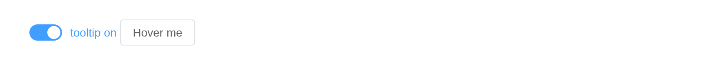

Display prompt information for mouse hover.
Basic usage
Tooltip has 9 placements.
Use attribute content to set the display content when
hover. The attribute placement determines the position of
the tooltip. Its value is [orientation]-[alignment] with
four orientations top, left,
right, bottom and three alignments
start, end, null, and the default
alignment is null. Take placement="left-end" for example,
Tooltip will display on the left of the element which you are hovering
and the bottom of the tooltip aligns with the bottom of the element.
places <- c(
"top-start",
"top",
"top-end",
"left-start",
"left",
"left-end",
"right-start",
"right",
"right-end",
"bottom-start",
"bottom",
"bottom-end"
)
tags$div(
style = "padding: 40px 80px",
lapply(places, function(p) {
el_tooltip(
paste0("tip_", gsub("-", "_", p)),
el$button(p),
placement = p,
content = paste(p, "prompts info"),
effect = "dark"
)
})
)Theme
Tooltip has two built-in themes: dark and
light.
Tip
To use customized theme, you will have to known where your tooltip is rendered into, if your tooltip is rendered into the root element, you will need to set the css rule globally.
It is recommended that not using linear gradient background color when you using customized theme and showing the arrow at the same time, because the popup arrow and the content are two different elements, the popup arrow’s style needs to be set individually, and when it comes to the gradient background color, it might seem a little bit weird.
Set effect to modify theme, and the default value is
dark.
tagList(
el_tooltip(
"dark",
el$button("Dark"),
content = "Top center",
placement = "top"
),
el_tooltip(
"light",
el$button("Light"),
content = "Bottom center",
placement = "bottom",
effect = "light"
),
el_tooltip(
"custom",
el$button("Customized theme"),
content = "Bottom center",
effect = "customized",
placement = "bottom"
)
)More Content
Display multiple lines of text and set their format.
Override attribute content of el-tooltip by
adding a slot named content.
el_tooltip(
"multi",
el$button("Top center"),
placement = "top",
slots = list(content = tags$div("multiple lines", tags$br(), "second line"))
)Advanced usage
In addition to basic usages, there are some attributes that allow you to customize your own:
transition attribute allows you to customize the
animation in which the tooltip shows or hides, and the default value is
el-fade-in-linear.
disabled attribute allows you to disable
tooltip. You just need set it to true.
In fact, Tooltip is an extension based on ElPopper, you can use any attribute that are allowed in ElPopper.
Turned on and off from the server,
update_el_tooltip(disabled =).
ui <- el_page(
el_switch("tip_on", value = TRUE, active_text = "tooltip on"),
el_tooltip(
"adv",
el$button("Hover me"),
content = "click the switch to turn me off",
placement = "bottom"
)
)
server <- function(input, output, session) {
observeEvent(
input$tip_on,
update_el_tooltip(id = "adv", disabled = !input$tip_on)
)
}
shinyApp(ui, server)
Tip
The
router-linkcomponent is not supported in tooltip, please usevm.$router.push.Disabled form elements are not supported for Tooltip, more information can be found at MDN. You need to wrap the disabled form element with a container element for Tooltip to work.
HTML as content
The content attribute can be set to HTML string.
Warning
Although
contentproperty supports HTML strings, dynamically rendering arbitrary HTML on your website can be very dangerous because it can easily lead to XSS attacks. So whenraw-contentis on, please make surecontentis trusted, and never assign user-providedcontent.
el_tooltip(
"html_tip",
el$button("hover me"),
raw_content = TRUE,
content = "<span>The content can be <strong>HTML</strong></span>"
)Virtual triggering
Sometimes we want to render the tooltip on some other trigger element, we can separate the trigger and the content.
Tip
Virtual triggering tooltip is controlled component, so that you will have to control the visibility of the tooltip your own when this happens, YOU WILL NOT be able to close the tooltip by clicking somewhere else.
Upstream hands virtual-ref an element from the page’s
script. In R, virtual_ref is a CSS selector for it – here a
button drawn apart from the tooltip – and
virtual_triggering turns on with it. A JS()
function returning an object with getBoundingClientRect()
also works, for a point that is not an element.
tagList(
el_button("vt_btn", "test"),
el_tooltip(
"vt",
content = "Bottom center",
placement = "bottom",
effect = "light",
trigger = "click",
virtual_ref = "#vt_btn"
)
)Singleton
Tooltip can also be singleton, which means you can have multiple
trigger with only one tooltip instance, this function is implemented
based on Virtual triggering
Tip
Known issue: when using singleton, the popup will be bouncing out from unexpected places
A virtual_ref matching several elements gives them one
tooltip, which moves to whichever the pointer is over.
tagList(
lapply(1:3, function(i) {
tags$span(
class = "singleton-btn",
el_button(paste0("single_", i), "Click to open tooltip")
)
}),
el_tooltip(
"single",
content = "Some content",
trigger = "click",
virtual_ref = ".singleton-btn",
popper_class = "singleton-tooltip"
),
tags$style(
".singleton-tooltip {
transition: transform 0.3s var(--el-transition-function-fast-bezier);
}"
)
)Controlled
Tooltip can be controlled by the parent component, by using
:visible you can implement two way binding.
Shown and hidden from the server,
update_el_tooltip(visible =), and then stays as set.
el_tooltip("ctl", el$button("Hover me"), visible = TRUE, content = "controlled")Animations
Tooltip can be customized animated, you can set the desired animation
use transition.
Tip
Transition Classes, more information can be found at Vue Transition.
el_tooltip(
"anim",
el$button("trigger me"),
content = "I am an el-tooltip",
transition = "slide-fade"
)Use the append-to
You must wait for the DOM to be mounted before using
targetElement.
tags$div(
id = "tip-host",
el_tooltip(
"app",
el$button("Hover me"),
content = "Appended to #tip-host",
append_to = "#tip-host"
)
)API
Element Plus’s tables, and beside each entry where it is in R.
Attributes
| Element | In R | Description | Type | Accepted | Default |
|---|---|---|---|---|---|
append-to |
append_to |
Which element the tooltip CONTENT appends to | 1 / 2 | — | |
effect |
effect |
Tooltip theme, built-in theme: dark /
light
|
3'dark' \\| 'light'
|
dark | |
content |
content |
Display content, can be overridden by slot#content
|
4 | ’’ | |
raw-content |
raw_content |
Whether content is treated as HTML string |
5 | false | |
placement |
placement |
Position of Tooltip |
6'top' \\| 'top-start' \\| 'top-end' \\| 'bottom' \\| 'bottom-start' \\| 'bottom-end' \\| 'left' \\| 'left-start' \\| 'left-end' \\| 'right' \\| 'right-start' \\| 'right-end'
|
bottom | |
fallback-placements |
fallback_placements |
List of possible positions for Tooltip popper.js |
7Placement[]
|
— | |
visible |
visible |
Visibility of Tooltip | 8 | — | |
disabled |
disabled |
Whether Tooltip is disabled | 9 | — | |
offset |
offset |
Offset of the Tooltip | 10 | 12 | |
transition |
transition |
Animation name | 11 | — | |
popper-options |
popper_options |
popper.js parameters | 12refer to popper.js doc | {} | |
arrow-offset |
arrow_offset |
Controls the offset (padding) of the tooltip’s arrow relative to the popper. | 13 | 5 | |
show-after |
show_after |
Delay of appearance, in millisecond, not valid in controlled mode | 14 | 0 | |
show-arrow |
show_arrow |
Whether the tooltip content has an arrow | 15 | true | |
hide-after |
hide_after |
Delay of disappear, in millisecond, not valid in controlled mode | 16 | 200 | |
auto-close |
auto_close |
Timeout in milliseconds to hide tooltip, not valid in controlled mode | 17 | 0 | |
popper-class |
popper_class |
Custom class name for Tooltip’s popper | 18 | — | |
popper-style |
popper_style |
Custom style for Tooltip’s popper | 19 / 20 | — | |
enterable |
enterable |
Whether the mouse can enter the tooltip | 21 | true | |
teleported |
teleported |
Whether tooltip content is teleported, if true it will
be teleported to where append-to sets |
22 | true | |
trigger |
trigger |
How should the tooltip be triggered (to show), not valid in controlled mode |
23'hover' \\| 'click' \\| 'focus' \\| 'contextmenu'
/ 24Array<'click' \\| 'focus' \\| 'hover' \\| 'contextmenu'>
|
hover | |
virtual-triggering |
virtual_triggering |
Indicates whether virtual triggering is enabled | 25 | — | |
virtual-ref |
virtual_ref |
Indicates the reference element to which the tooltip is attached | 26 | — | |
trigger-keys |
trigger_keys |
When you click the mouse to focus on the trigger element, you can define a set of keyboard codes to control the display of tooltip through the keyboard, not valid in controlled mode | 27 | [‘Enter’,‘Space’] | |
persistent |
persistent |
When tooltip inactive and persistent is
false , tooltip will be destroyed |
28 | — | |
aria-label |
aria_label |
Same as aria-label
|
29 | — | |
focus-on-target |
focus_on_target |
When triggering tooltips through hover, whether to focus the trigger element, which improves accessibility | 30 | false |
Events
| Element | In R | Description |
|---|---|---|
before-show |
input$<id>_before_show |
Triggers before tooltip is shown. Passes trigger reason as argument. |
show |
input$<id>_show |
Triggers when tooltip is shown. Passes trigger reason as argument. |
before-hide |
input$<id>_before_hide |
Triggers before tooltip is hidden. Passes trigger reason as argument. |
hide |
input$<id>_hide |
Triggers when tooltip is hidden. Passes trigger reason as argument. |
Slots
| Element | In R | Description |
|---|---|---|
default |
default content | Tooltip triggering & reference element, only a single root element is accepted |
content |
slots = list(content = ) |
Customize content |
Exposes
| Element | In R | Description |
|---|---|---|
isFocusInsideContent |
el_call(session, id, "isFocusInsideContent") |
Validate current focus event is trigger inside el-tooltip-content |
updatePopper |
el_call(session, id, "updatePopper") |
Update el-popper component instance |
onOpen |
el_call(session, id, "onOpen") |
Expose onOpen function to manage el-tooltip open state |
onClose |
el_call(session, id, "onClose") |
Expose onClose function to manage el-tooltip open state |
hide |
el_call(session, id, "hide") |
Expose hide function |